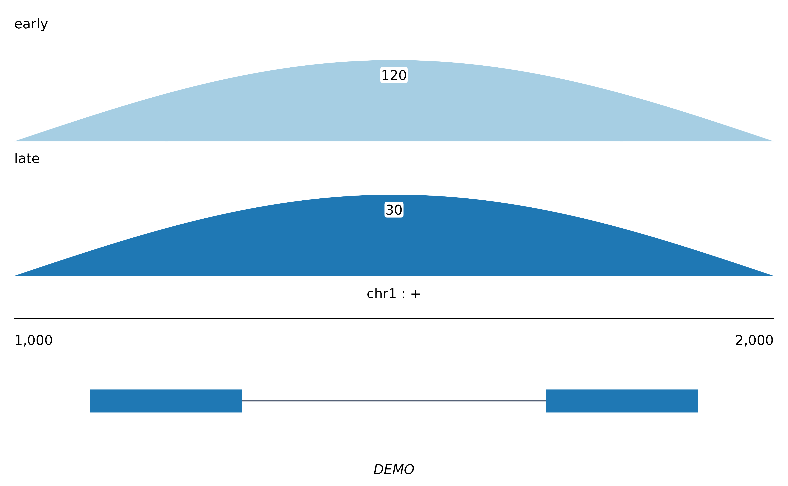

Stacks one coverage panel per group over a shared annotation panel. The
result is a patchwork object: print it, modify a panel with [[, or save
it with save_sashimi().
Usage
plot_sashimi(
x,
preset = NULL,
locus = NULL,
groups = NULL,
overlay = NULL,
overlay_junction_fun = "mean",
reverse_minus = FALSE,
palette = NULL,
alpha = 1,
normalize = "none",
library_sizes = NULL,
aggregate = "none",
fix_y_scale = FALSE,
ymax = NULL,
log_y = FALSE,
min_count = 0,
shrink = FALSE,
shrink_method = "power",
shrink_gamma = 0.7,
shrink_min = 100,
arc_shape = "sine",
arc_height_rule = "auto",
arc_height_frac = c(0.8, 1.2),
arc_width_rule = "constant",
arc_width = 0.5,
arc_side = "above",
arc_n = 121,
show_arc_label = TRUE,
arc_label_format = "activity",
arc_label_position = c("on", "above", "none"),
label_background = TRUE,
label_padding = 0.6,
label_offset = 0.03,
background = NA,
background_alpha = 1,
show_psi = TRUE,
psi_pad = 0.3,
show_model = TRUE,
show_features = TRUE,
show_apex = TRUE,
show_tx_label = FALSE,
show_coord_bar = TRUE,
show_gene_label = TRUE,
coord_ticks = TRUE,
chrom_style = "keep",
collapse_models = FALSE,
arrow_bins = 0,
role_fill = NULL,
feature_color = OM_FEATURE_FILL,
base_size = 9,
base_family = "",
hairline = 0.3,
panel_height = 1,
ann_height = 1.5,
title = NULL,
theme = NULL
)Arguments
- x
A
sashimi_dataobject, or anythingas_sashimi_data()accepts.- preset
A named bundle of arguments setting the house style for a kind of figure; see
presets(). Anything you pass explicitly overrides it, sopreset = "tss"gets you the start-site style andpreset = "tss", arc_shape = "bezier"gets you that style with a different curve.- locus
A
locus_idor gene name. Defaults to the first locus.- groups
Groups to draw, in order. Defaults to every group present.
- overlay
Combine groups into shared panels instead of one panel each. A named list maps panel names to the groups they hold (
list(Ctrl = c("c1", "c2"), Treated = c("t1", "t2"))); a single column name in the object'stracksslot groups by that column. This isggsashimi's--overlay, and pairs naturally withalphabelow 1.- overlay_junction_fun
How a junction shared by several overlaid groups is combined:
"mean","median","sum"or"max".- reverse_minus
Draw a minus-strand locus 5\' to 3\', left to right, by flipping the x axis. MISO calls this
reverse_minus; it makes the start site of a minus-strand gene appear on the left, where a reader expects it.- palette
Palette name, colour vector, named colour vector, or the path to a one-colour-per-line palette file. See
omakase_palette().- alpha
Opacity of the coverage areas.
- normalize
Coverage normalisation, see
normalize_methods().- library_sizes
Named vector of library sizes for
normalize.- aggregate
Collapse replicates within each group; see
aggregate_tracks().- fix_y_scale
Give every panel the same y limit.
- ymax
Explicit y limit; overrides
fix_y_scale.- log_y
Draw coverage on a
log10(1 + value)axis.- min_count
Drop junctions supported by fewer than this many reads.
- shrink
Compress introns. See
intron_map().- shrink_method, shrink_gamma, shrink_min
Compression rule, its exponent, and the shortest intron worth compressing.
- arc_shape, arc_height_rule, arc_height_frac, arc_width_rule, arc_width, arc_side, arc_n
Arc geometry; see
sashimi_track().- show_arc_label, arc_label_format, arc_label_position, label_background, label_padding, label_offset
Arc labelling: whether to print the count, how to format it, whether it sits
"on"the arc (interrupting it) or"above"it, and the box padding and clearance. Seesashimi_track().- background, background_alpha
Fill and opacity for the coverage panels.
NAleaves them transparent.- show_psi, psi_pad
Whether to print PSI, and how much room to leave for it.
- show_model, show_features, show_apex, show_tx_label, show_coord_bar, show_gene_label
Which parts of the annotation panel to draw.
- coord_ticks
Intermediate ticks on the coordinate bar; see
sashimi_annotation(). Drawn by default whenever introns are compressed.- chrom_style
How the contig name is printed:
"keep","ucsc"(ensure achrprefix) or"ensembl"(strip one).- collapse_models
Draw one row per role rather than one per transcript.
- arrow_bins
Strand arrowheads per transcript;
0for none.- role_fill, feature_color
Colours for transcript models and features.
- base_size
Base font size in points.
- base_family
Font family for every piece of text in the figure. The empty string uses the graphics device's default. Text geoms do not inherit a theme's family, so this is threaded to each of them explicitly.
- hairline
Line width for rules.
- panel_height, ann_height
Relative heights of a coverage panel and the annotation panel.
- title
Figure title, or
NULL.- theme
A ggplot2 theme, or
NULLfortheme_omakase().
Reading the figure
Each panel is one group - a sample, a condition, a developmental stage. The
filled area is coverage; the arcs are junctions, drawn from donor to
acceptor with the supporting count printed at the apex. Where a psi slot
is present, the inclusion value for that group is printed in the right-hand
gutter. Beneath the stack sit the coordinate bar, the transcript models and
any annotation features.
By default each panel is scaled to its own maximum, so a lowly expressed
group is still readable; set fix_y_scale = TRUE when relative depth
between panels is the point of the figure.
Examples
sd <- sashimi_data(
loci = data.frame(locus_id = "a", gene_name = "DEMO", chrom = "chr1",
strand = "+", win_lo = 1000, win_hi = 2000),
tracks = rbind(
data.frame(locus_id = "a", group = "early", pos = seq(1000, 2000, 10),
value = abs(sin(seq(0, pi, length.out = 101))) * 20),
data.frame(locus_id = "a", group = "late", pos = seq(1000, 2000, 10),
value = abs(sin(seq(0, pi, length.out = 101))) * 8)
),
junctions = data.frame(locus_id = "a", group = c("early", "late"),
x0 = 1200, x1 = 1800, count = c(120, 30)),
models = data.frame(locus_id = "a", tx_id = "tx1", role = "main",
start = c(1100, 1700), end = c(1300, 1900))
)
plot_sashimi(sd)
